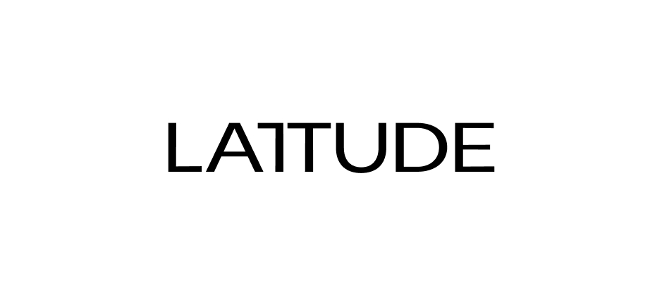

Process overview
Lattude is an attorney firm specialized in fintech startups. Based in New York, they provide legal and advisory services for financial technology companies at early stage.
The brief was to reimagine a new visual identity and propose a website that matched their mission. The challenge was to keep it simple, traditional for a law firm and fresh taking into account the existing elements. Proposing minimal changes, to ensure consistency to their existing brand.
Identity
The Lattude wordmark is a contemporary sans serif with a distinctive qualitiy: the brand’s signature joined ‘T’.
Suggesting unity and trust, the joined ‘T’ becomes a strong and recognisable symbol meant to be used accross platforms, for print and digital media.

Color system
The primary Lattude colour palette is made up of blue, green and yellow. Modifying the existing colors with a difference in shades, the proposed color system was closely related to the previous one. The intention was to rely on dark colors, using bright accents.
These colours feature across Lattude branded assets including illustration, type, graphs, printed and digital materials.
Website
With the brand identity in place, the rebranding of the website intended to elevate the brand and give more white space to the website.
The proposed website changes were not implemented.